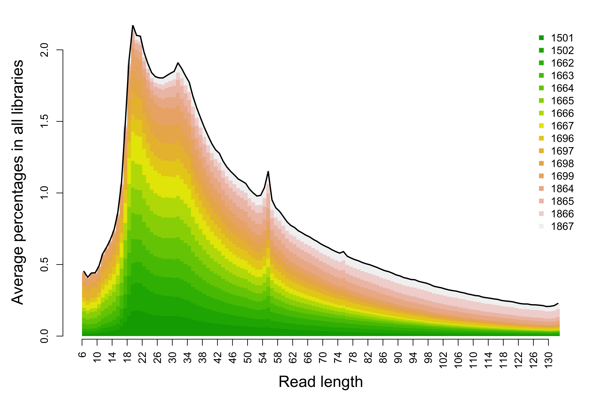

Introduction This analysis compares a set of paired end FASTQ files processed by the FLASH2 program, which combines pairs of overlapping reads to generate longer, single-end reads. Flash2 processes read pairs based on the following 3 scenarios:
PRO-seq project
Total number of reads in different categories according to FLASH2.
Click here to view summary table.
Table 1. Percentages of read pairs in each FLASH2 category. “Combined” equals to the sum of Innie and Outie.
| Total | Discarded(%) | Combined(%) | Innie(%) | Outie(%) | Uncombined(%) | |
|---|---|---|---|---|---|---|
| 1501 | 251532955 | 0.0000 | 86.8824 | 14.9425 | 71.9399 | 13.1176 |
| 1502 | 265217274 | 0.0000 | 84.0776 | 14.6011 | 69.4764 | 15.9224 |
| 1662 | 250176872 | 0.0000 | 83.7626 | 15.3823 | 68.3803 | 16.2374 |
| 1663 | 339852023 | 0.0000 | 76.2419 | 12.8144 | 63.4275 | 23.7581 |
| 1664 | 163419734 | 0.0035 | 83.0023 | 9.1835 | 73.8188 | 16.9942 |
| 1665 | 168854587 | 0.0036 | 83.1048 | 9.6775 | 73.4273 | 16.8916 |
| 1666 | 122163247 | 0.0036 | 83.6945 | 11.2540 | 72.4404 | 16.3019 |
| 1667 | 121758864 | 0.0035 | 84.2893 | 8.4905 | 75.7988 | 15.7072 |
| 1696 | 131335736 | 0.0000 | 82.5836 | 20.1907 | 62.3929 | 17.4164 |
| 1697 | 97979783 | 0.0000 | 81.4929 | 11.6126 | 69.8803 | 18.5071 |
| 1698 | 112550728 | 0.0000 | 77.7007 | 14.6833 | 63.0174 | 22.2993 |
| 1699 | 134887552 | 0.0000 | 83.7933 | 14.2287 | 69.5646 | 16.2067 |
| 1864 | 462304566 | 0.0004 | 75.8410 | 29.4268 | 46.4142 | 24.1586 |
| 1865 | 465041946 | 0.0008 | 75.7214 | 29.5017 | 46.2197 | 24.2779 |
| 1866 | 467777889 | 0.0001 | 59.3598 | 35.5292 | 23.8306 | 40.6401 |
| 1867 | 379659795 | 0.0007 | 66.7171 | 33.5676 | 33.1495 | 33.2822 |
Length of single end reads generated by FLASH2, subtracting the 6 base(s) of barcode.
Click here to view read counts by length table.
Click here to view read percentages by length table.

Figure 1. Average percentages of reads with given length among all merged reads.
Figure 2. Similarity of read length distribution.
## R version 3.3.3 (2017-03-06)
## Platform: x86_64-apple-darwin13.4.0 (64-bit)
## Running under: OS X Yosemite 10.10.5
##
## locale:
## [1] en_US.UTF-8/en_US.UTF-8/en_US.UTF-8/C/en_US.UTF-8/en_US.UTF-8
##
## attached base packages:
## [1] stats graphics grDevices utils datasets methods base
##
## other attached packages:
## [1] kableExtra_0.9.0 PROseqR_0.0.0.9000 awsomics_0.0.0.9000
## [4] htmlwidgets_0.9 DT_0.2 yaml_2.1.16
## [7] knitr_1.18 rmarkdown_1.10.3 RoCA_0.0.0.9000
## [10] RCurl_1.95-4.9 bitops_1.0-6 devtools_1.13.4
##
## loaded via a namespace (and not attached):
## [1] Rcpp_0.12.14 pillar_1.1.0 plyr_1.8.4
## [4] highr_0.6 tools_3.3.3 digest_0.6.13
## [7] jsonlite_1.5 evaluate_0.10.1 memoise_1.1.0
## [10] tibble_1.4.2 viridisLite_0.2.0 pkgconfig_2.0.1
## [13] rlang_0.1.6 rstudioapi_0.7 withr_2.1.1
## [16] stringr_1.2.0 httr_1.3.1 xml2_1.1.1
## [19] hms_0.4.0 rprojroot_1.3-2 R6_2.2.2
## [22] readr_1.1.1 magrittr_1.5 backports_1.1.2
## [25] scales_0.5.0 htmltools_0.3.6 rsconnect_0.8.5
## [28] rvest_0.3.2 colorspace_1.3-2 stringi_1.1.6
## [31] munsell_0.4.3END OF DOCUMENT